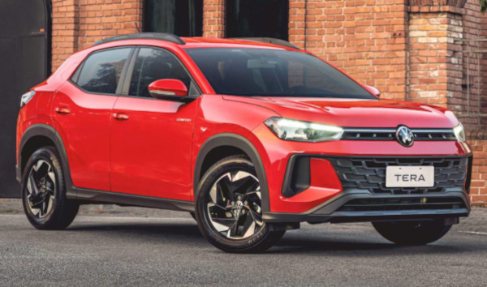

O Volkswagen Tera é um SUV compacto da Volkswagen desenvolvido para o mercado brasileiro. O modelo apresenta design moderno e robusto, com linhas marcantes e teto bicolor, oferecendo uma aparência esportiva e atual. O carro pode ser equipado com motores 1.0, incluindo versões turbo que chegam a cerca de 116 cv de potência, proporcionando bom desempenho aliado à economia de combustível. Além disso, o Tera traz recursos tecnológicos como painel digital, central multimídia VW Play Connect e conectividade com smartphones, oferecendo conforto, praticidade e tecnologia para o uso no dia a dia.
Voltar